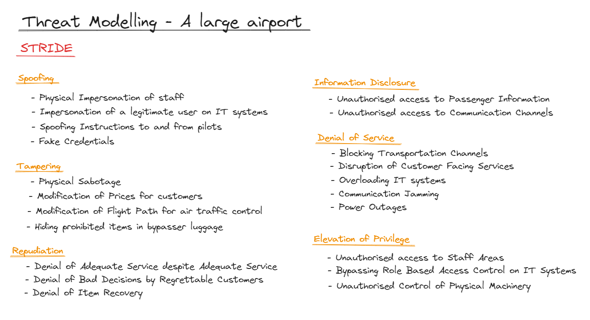

Threat Management
Glossary
Threat
"Any circumstance or event with the potential to adversely impact organizational operations (including mission, functions, image, or reputation), organizational assets, or individuals through an information system via unauthorized access, destruction, disclosure, modification of information, and/or denial of service. Also, the potential for a threat-source to successfully exploit a particular information system vulnerability." ( FIPS 200 )
Management Models
STRIDE / DREAD
STRIDE is a mnemonic for threat categories, used to help identify threats to a system. The categories are spoofing, tampering, repudiation, information disclosure, denial of service, and elevation of privilege.
DREAD is a mnemonic for risk categories, used to help identify risks associated with threats to a system. The categories are damage, reproducibility, exploitability, affected users, and discoverability.
Attack & Defense Trees
- S, Bistarelli., F, Fioravanti. & P, Peretti. (2006) 'Defense trees for economic evaluation of security investments'. First International Conference on Availability, Reliability and Security (ARES'06). Vienna, Austria, 2006. DOI. - Bistarelli et al. present an extension of an attack tree, known as a defense tree.
- H, Lallie., K, Debattista. & J, Bal. (2020) 'A review of attack graph and attack tree visual syntax in cyber security'. Computer Science Review. 35. DOI. - Lallie et al review different ways of arranging attack trees.
- J, Straub. (2020) 'Modeling Attack, Defense and Threat Trees and the Cyber Kill Chain, ATT&CK and STRIDE Frameworks as Blackboard Architecture Networks'. 2020 IEEE International Conference on Smart Cloud (SmartCloud). Washington, DC, USA, 2020. DOI. - Straub outlines threat management models, compares them, and combines them into a Blackboard Architecture.
SARA
- J, Monteuuis., A Boudguiga., J, Zhang., H, Labiod., A, Servel. & P, Urien. (2018) 'SARA: Security Automotive Risk Analysis Method'. CPSS '18: Proceedings of the 4th ACM Workshop on Cyber-Physical System Security. Vienna, Austria, 2006. DOI. - Moneteuuis et al. present SARA, a Security Automotive Risk Analysis method, that builds upon feature definition, threat specification, risk assessment and countermeasure models for the risk analysis of automobiles.
Threat Modelling Manifesto
- Threat Modelling Manifesto - Guidelines for threat modelling.